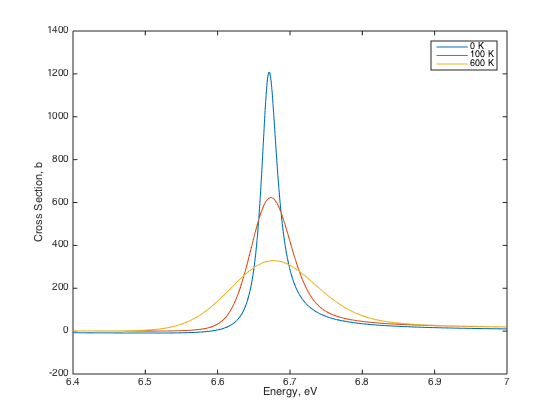

Neutron Interaction Resonances
Contents
First define all of the needed parameters and constants, being careful with units.
A = 238; % ratio of nuclear mass to neutron mass a = (0.123*A^(1.0/3.0) + 0.08)*1e-12; % hard-sphere radius of nucleus, cm I = 0; % target spin, unitless J = 0.5; % compound nucleus spin, unitless E_i = 6.67; % location of resonance, eV Gamma_i = 0.02752; % total resonance width, eV Gamma_ni = 0.00152; % neutron partial width, eV Gamma_gi = 0.026; % radiative capture partial width, eV c = 2.99792458e10; % speed of light in vacuum, cm/s m = 939.57e6/c^2; % mass of neutron, eV/c^2 = eV s^2/cm^2 hbar = 4.135667662e-15/(2.0*pi); % reduced plank's constant, eV s k = 8.61734e-5; % boltzmann constant, eV/K gJ = (2*J+1)/(2*(2*I+1)); % statistical spin factor, unitless
0k Single-Level Breit-Wigner Capture and Elastic Scattering Cross Sections
First, create a function to calculate the neutron wavelength as a function of energy:
wavelength = @(E) (A+1)/A*hbar./sqrt(2.0*E*m); % eV s/sqrt(eV eV s^2 / cm^2) = cm
Now create functions to calculate and the s-wave potential cross section, , as functions of energy, where
and
sigma0 = @(E) 4.0*pi*wavelength(E).^2*gJ*Gamma_ni/Gamma_i; % cm^2
sigmap = @(E) 4.0*pi*wavelength(E).^2.*sin(a./wavelength(E)).^2;
Now we have everything in place to calculate the the capture and elastic scattering cross sections. Rather than doing the actual calculation here, I am going to create two functions that will do the calculation as a function of energy. The function sigma_g will calculate the capture cross section given by
while the function sigma_e will calculate the elastic scattering cross section given by
The code implementing these functions is given below
function sigma_g = sigma_g(E,Gamma_gi,Gamma_i,E_i,sigma0)
sigma_g = sigma0(E)*Gamma_gi*Gamma_i./(Gamma_i^2 + 4.0*(E-E_i).^2);
end
function sigma_e = sigma_e(E,a,Gamma_ni,Gamma_i,E_i,sigma0,sigmap,wavelength) phi0 = a./wavelength(E); sigma_e = sigmap(E).^2 + ... sigma0(E).*(2/Gamma_i*(E-E_i).*sin(2.0*phi0) + ... Gamma_ni/Gamma_i - 2.0*sin(phi0).^2)*Gamma_i^2./(Gamma_i^2 + 4.0*(E-E_i).^2); end
Now calculate and plot:
E = linspace(6.4,7.0,1000); sigmae0 = sigma_e(E,a,Gamma_ni,Gamma_i,E_i,sigma0,sigmap,wavelength)*1.0e24; % elastic cross section, barns sigmag0 = sigma_g(E,Gamma_gi,Gamma_i,E_i,sigma0)*1.0e24; % capture cross section, barns sigmat0 = sigmag0+sigmae0; % total cross section, barns elastic = plot(E,sigmae0); hold on; capture = plot(E,sigmag0); total = plot(E,sigmat0); hold off; legend('Elastic','Capture','Total')

Doppler Broadened Cross Sections
Now let's calculate Doppler broadened cross sections. We will do this using the formulation under the assumption . Thus we need to evaluate
and
where , and .
The and functions are evaluated using a Gauss-Hermite quadrature. This form of evaluation is only accurate at very low energies due to the shape of the integrand (which can become highly peaked). I am using 200 quadrature points to get rid of the oscillations that result from a poor approximation. To get the integrals in the right form for the quadrature we should make the substitution , which leads to
and
The code for and are given below.
function f = psi_Doppler(u, beta) n = 200; [x, w] = GaussHermite(n); f = 0; for i = 1:n f = f + 1.0./(1.0 + (x(i)*beta + u).^2)*w(i); end f = 1.0/sqrt(pi)*f; end
function f = phi_Doppler(u, beta) n = 200; [x, w] = GaussHermite(n); f = 0; for i = 1:n f = f + (x(i)*beta + u)./(1.0 + (x(i)*beta + u).^2)*w(i); end f = 1.0/sqrt(pi)*f; end
We can now write a function to calculate the Doppler-broadened capture cross section
function sigma_g = sigma_g_Doppler(E,Gamma_gi,Gamma_i,E_i,sigma0,T,k,A) u = 2.0./Gamma_i*(E-E_i); Gamma_D = 2.0*sqrt(E_i*k*T/A); beta = 2.0*Gamma_D/Gamma_i; sigma_g = sigma0(E).*Gamma_gi/Gamma_i.*psi_Doppler(u,beta); end
Calculate and plot:
sigmag100 = sigma_g_Doppler(E,Gamma_gi,Gamma_i,E_i,sigma0,100.0,k,A)*1.0e24; sigmag600 = sigma_g_Doppler(E,Gamma_gi,Gamma_i,E_i,sigma0,600.0,k,A)*1.0e24; plot(E,sigmag0); hold on plot(E,sigmag100) plot(E,sigmag600); hold off legend('0 K','100 K','600 K') xlabel('Energy, eV') ylabel('Cross Section, b')
The Doppler broadened scatter cross section is
which I implement in the following function.
function sigma_e = sigma_e_Doppler(E,a,Gamma_ni,Gamma_i,E_i,sigma0,wavelength,T,k,A) u = 2.0./Gamma_i*(E-E_i); Gamma_D = 2.0*sqrt(E_i*k*T/A); beta = 2.0*Gamma_D/Gamma_i; sigma_e = 4.0*pi*a^2 + ... sigma0(E).*(2.0*a./wavelength(E).*phi_Doppler(u,beta) ... + Gamma_ni/Gamma_i*psi_Doppler(u,beta)); end
Calculate and plot:
sigmae100 = sigma_e_Doppler(E,a,Gamma_ni,Gamma_i,E_i,sigma0,wavelength,100,k,A)*1.0e24; sigmae600 = sigma_e_Doppler(E,a,Gamma_ni,Gamma_i,E_i,sigma0,wavelength,600,k,A)*1.0e24; plot(E,sigmae0); hold on plot(E,sigmae100) plot(E,sigmae600); hold off legend('0 K','100 K','600 K') xlabel('Energy, eV') ylabel('Cross Section, b')
Flux Spectrum in a Resonance
Let's look at this resonances effect on the flux spectrum. For neutrons to be slowing down past the resonance, we need a moderating material. Let's use hydrogen and calculate its potential cross section using the hard-sphere formula for nuclear radius. I will also define the ratio of moderator number density to absorber density as 115.
sigmaSM = 4.0*pi*(0.123 + 0.08)^2; % barns
NMtoNR = 115.0;
Now use the narrow resonance approximations to estimate the the spectrum in and around the resonance. Given the current assumptions the narrow resonance approximation can be written
where is the flux spectrum, not to be confused with the Doppler-$\phi$ function!
sigmaSRes = sigma_e(E,a,Gamma_ni,Gamma_i,E_i,sigma0,sigmap,wavelength)*1.0e24; % barns sigmaARes = sigma_g(E,Gamma_gi,Gamma_i,E_i,sigma0)*1.0e24; %barns sigmaTRes = sigmaARes + sigmaSRes; phi_NR = (NMtoNR*sigmaSM + sigmap(E))./((sigmaTRes + NMtoNR*sigmaSM).*E);
Let's plot the flux superimposed over the capture cross section to make sure everything looks right.
[hAx,hSigma,hPhi] = plotyy(E,sigmaARes, E,phi_NR); xlabel('Energy, eV') ylabel(hAx(1),'Cross Section, b') % left y-axis ylabel(hAx(2),'Flux, n/cm^2/s') % right y-axis
Now let's look at the effect of Doppler broadening. I will use the narrow resonance approximation with the 0 K and Doppler broadened cross sections from the last section.
EE = linspace(6.0,7.4,1000); sigmaTRes0 = (sigma_g_Doppler(EE,Gamma_gi,Gamma_i,E_i,sigma0,0.0,k,A) ... + sigma_e_Doppler(EE,a,Gamma_ni,Gamma_i,E_i,sigma0,wavelength,0.0,k,A))*1.0e24; sigmaTRes100 = (sigma_g_Doppler(EE,Gamma_gi,Gamma_i,E_i,sigma0,100.0,k,A) ... + sigma_e_Doppler(EE,a,Gamma_ni,Gamma_i,E_i,sigma0,wavelength,100.0,k,A))*1.0e24; sigmaTRes600 = (sigma_g_Doppler(EE,Gamma_gi,Gamma_i,E_i,sigma0,600.0,k,A) ... + sigma_e_Doppler(EE,a,Gamma_ni,Gamma_i,E_i,sigma0,wavelength,600.0,k,A))*1.0e24; phi_NR0 = (NMtoNR*sigmaSM + sigmap(E))./((sigmaTRes0 + NMtoNR*sigmaSM).*EE); phi_NR100 = (NMtoNR*sigmaSM + sigmap(E))./((sigmaTRes100 + NMtoNR*sigmaSM).*EE); phi_NR600 = (NMtoNR*sigmaSM + sigmap(E))./((sigmaTRes600 + NMtoNR*sigmaSM).*EE);
And plot...
plot(EE,phi_NR0, EE,phi_NR100, EE,phi_NR600) legend('0 K','100 K','600 K') xlabel('Energy, eV') ylabel('Flux')
Neutron Capture Rates
The capture rate for a given resonance capture cross section is
Here I will pick inverse barn-cm, so that if the capture cross section is in barns and the flux is in units of inverse cm$^2$-sec then will have units of inverse cm$^3$.
Because I calculated the flux spectra on a uniform energy grid, then I can approximate the capture integral using
where is the energy spacing and is the index into my energy points. Of course, the total energy range should be sufficiently wide to include all of the significant capture region.
h = EE(2) - EE(1); fprintf(1,'Capture rate at 0 K = %7.4f \n', sum(phi_NR0.*sigma_g_Doppler(EE,Gamma_gi,Gamma_i,E_i,sigma0,0.0,k,A))*h*1.0e24); fprintf(1,'Capture rate at 0 K = %7.4f \n', sum(phi_NR100.*sigma_g_Doppler(EE,Gamma_gi,Gamma_i,E_i,sigma0,100.0,k,A))*h*1.0e24); fprintf(1,'Capture rate at 0 K = %7.4f \n', sum(phi_NR600.*sigma_g_Doppler(EE,Gamma_gi,Gamma_i,E_i,sigma0,600.0,k,A))*h*1.0e24);
Capture rate at 0 K = 5.1424 Capture rate at 0 K = 5.2068 Capture rate at 0 K = 5.5243